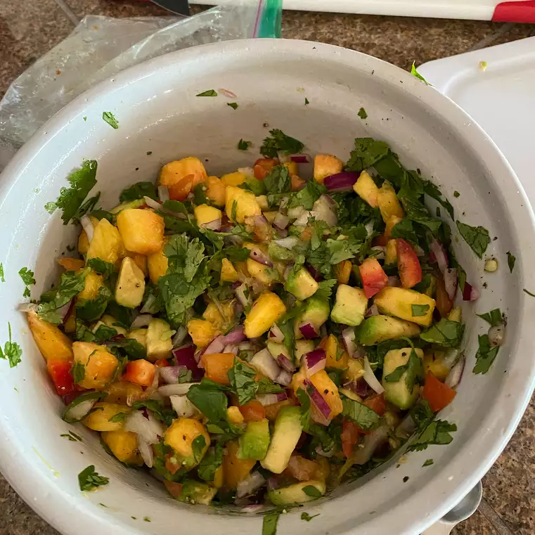

←Back
Peach Avocado Salsa

Description
Fresh peaches with creamy avocado, bell pepper, onions, and jalapeno make a great summertime salsa.
Use as a topper for grilled fish or chicken, or just dip tortilla chips in it. Not a fan of avocados? The salsa is just as great without it. The longer it can marinate, the better it is.
Ingredients
- 2 fresh peaches - peeled, pitted, and diced
- 1 jalapeno pepper, seeded and minced
- ½ red onion, minced
- ½ red bell pepper, minced
- ¼ cup chopped fresh cilantro, or to taste
- 2 cloves garlic, grated
- ½ lime, juiced
- ½ lemon, juiced
- salt and ground black pepper to taste
- 1 avocado - peeled, pitted, and diced
Steps:
- Gently mix peaches, jalapeno pepper, red onion, red bell pepper, cilantro, garlic, lime juice, and lemon juice in a bowl; season with salt and black pepper.
- Cover bowl with plastic wrap and refrigerate at least 30 minutes. Fold avocado into the salsa to serve.